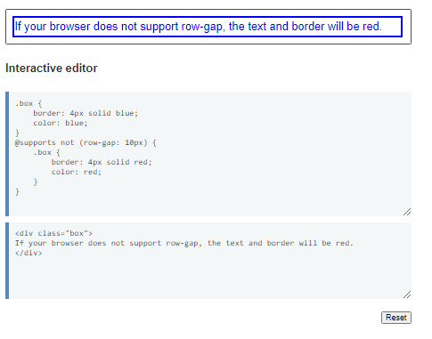
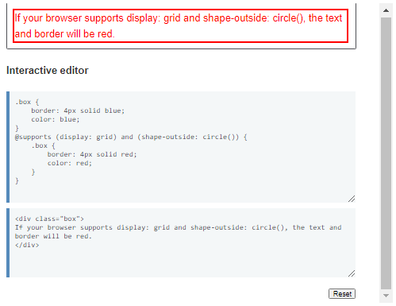
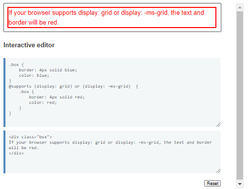
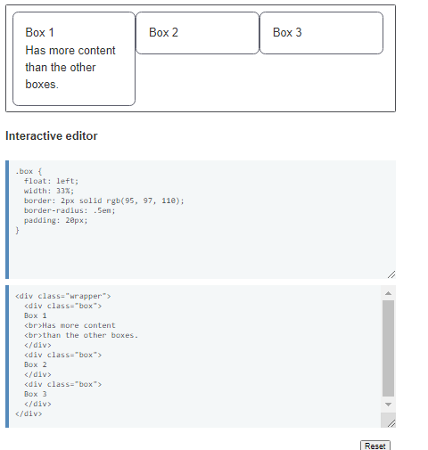
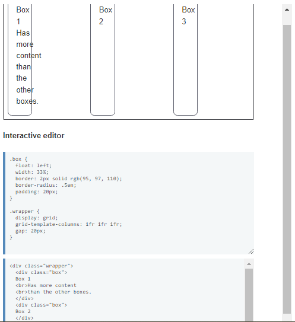
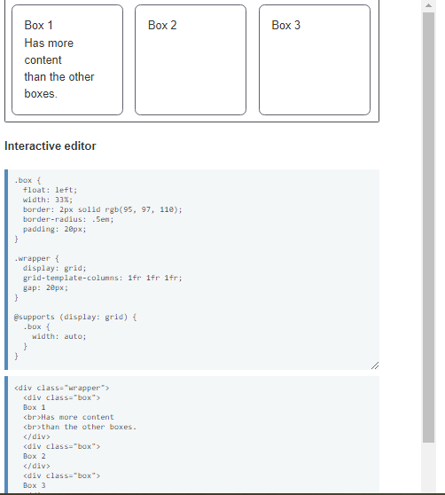
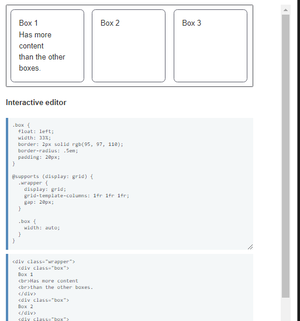

A continuación se mostraran los elementos
más populares dentro del lenguaje de estilo CSS
especificamente la versión CSS3.
Ejemplos:
Testing for lack of support
In addition to asking the browser if it supports a feature, you can
test for the opposite by adding in the not keyword:
@supports not (property: value) { CSS rules to apply }
The CSS inside the following example feature query will run if the
browser does not support row-gap.

Testing for more than one feature
You may need to test support for more than one property in your
feature query. To do so, you can include a list of features to test
for, separated by and keywords:
@supports (property1: value) and (property2: value) { CSS rules to
apply }
For example, if the CSS you want to run requires that the browser
supports CSS Shapes and CSS Grid, you could create a rule which
checks for both of these things. The following rule will only return
true if both shape-outside: circle() and display: grid are supported
by the browser.

You can also use or, if one property out of a selection could match
to enable the CSS you want to use:
@supports (property1: value) or (property2: value) { CSS rules to
apply }
This can be particularly useful if a feature is vendor prefixed, as
you can test for the standard property plus any vendor prefixes.

Limitations of feature queries
The @supports rule tests to see if the browser can parse one or more
property/value pairs, and therefore if it claims to support the
feature(s). If the property and value pair is understood by the
browser it returns a positive response. Therefore feature queries
cannot be used to check if a browser supports a thing properly, and
without bugs!
In addition, feature queries cannot test for partial
implementations. A good example of this is the gap property. All
browsers that support CSS Grid support gap in CSS Grid, however only
Firefox supports gap in Flexbox. If you test for the gap property,
because you want to use it in Flexbox, you will get a positive
response even though it is not implemented.
Feature queries are an incredibly useful tool when progressively
enhancing a site. They enable you to provide a good solution for all
browsers, and an enhanced solution for those browsers that support
newer features.
However, there are browsers that don't support feature queries but
also have no support for a feature we want to use. For example, we
might want to use CSS Grid, which is not supported in IE11. We can't
create a fallback by checking for browsers which do not have
support, as IE11 doesn't support feature queries either! In practice
however, when using feature queries for progressive enhancement,
this doesn't matter. You do however need to structure your CSS in a
certain way, writing CSS for non-supporting browsers and overwriting
it with the CSS inside the feature query.
Let's walk through a very simple example where feature queries come
in handy, which uses them in the way described above.
Let's say we want to create a layout of three boxes in a row, and
ideally we would like to use CSS Grid Layout. However, we would like
to have a layout for older browsers using floats. We can start by
creating that floated layout with the following code, which gives us
three columns.

When browsers don't understand a CSS property or value, they ignore
it. So we could start enhancing our layout by using CSS Grid.
Browsers that do not support grid will ignore the grid value of the
display property. Once a floated item becomes a grid item, the float
is removed — something you can read more about in Supporting Older
Browsers. Therefore the grid version should just overwrite the
floated one.
We have a problem however, caused by the width property we used on
our floated items to make them display as three columns. This is now
interpreted by grid as being the width of the column track, not the
width of the container as it is for the float.

What we need is a way to remove the width if display: grid is
supported. This is exactly the situation feature queries solve. We
can set the width back to auto if grid is supported.

In the above scenario, it doesn't matter that IE11 doesn't support
feature queries or CSS Grid — it would get the floated version
anyway, which is then overwritten by browsers that do support grid.
An alternate way to write the above code is to wrap all of the grid
code in a feature query as follows.

This may mean you have a little more code but comes with the benefit
of being able to test the fallback by misspelling the property or
value name. You can try this in the live example above by changing
display: grid in the @supports rule to display: grip or similar.